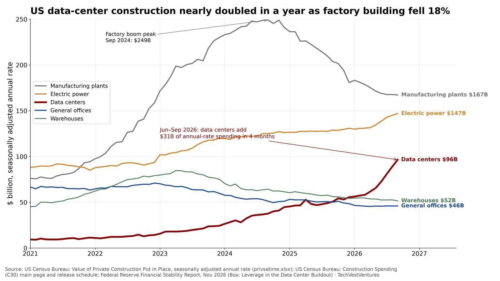

Q10. Build Pace

Value of private construction put in place, seasonally adjusted annual rate, January 2021 – September 2026 (US Census Bureau; September is preliminary). Data-center construction reached $96.5 billion in September 2026, up 90% from a year earlier and more than double general office building ($46.0B). It now accounts for 12.2% of all private nonresidential construction. The jump since May ($65.7B to $96.5B) is the largest four-month dollar increase in the series. Meanwhile manufacturing construction, the CHIPS/IRA-era boom, has fallen from $249B (Sep 2024) to $167B, and electric-power construction ($147B) is rising to serve the new load.
- Data-center construction, $ billion SAAR: Apr 61.9, May 65.7, Jun 72.7, Jul 80.7, Aug 88.8, Sep 96.5 (Jul and Aug revised; Sep preliminary).
- Data-center spending was $9.3B SAAR in January 2021, so it has grown about 10-fold.
- Census values measure the buildings and site work, not the chips and servers inside, which cost several times more; the Fed's November Financial Stability Report counts more than $680 billion of advanced-computing debt issued by October 2026.
- Earlier TVV daily graphs (Oct 31) compared data centers with offices since 1993; this chart instead shows the hand-off from factories to data centers since 2021.
Note: Census monthly construction spending is survey-based and revised; the latest two months are revised again next month. 'Data center' is a sub-category of Office in the Census classification, published since 2014.
Sources: US Census Bureau: Value of Private Construction Put in Place, seasonally adjusted annual rate (privsatime.xlsx) US Census Bureau: Construction Spending (C30) main page and release schedule Federal Reserve Financial Stability Report, Nov 2026 (Box: Leverage in the Data Center Buildout)